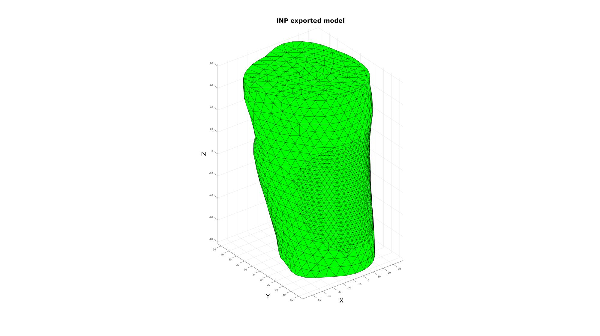

export_INP
Below is a demonstration of the features of the export_INP function
Contents
clear; close all; clc;
Plot settings
faceAlpha=0.5; fontSize=25;
Get example data
In this example INP geometry is first imported and then exported again
%Set main folder defaultFolder = fileparts(fileparts(mfilename('fullpath'))); pathName=fullfile(defaultFolder,'data','INP'); %Set model testCase=3; switch testCase case 1 %Triangular elements fileNameEnd='example_TRI.inp'; numberNodesElement=3; case 2 %Quad elements fileNameEnd='example_QUAD.inp'; numberNodesElement=4; case 3 %Tetrahedral elements fileNameEnd='example_TET.inp'; numberNodesElement=4; case 4 %Hexahedral elements fileNameEnd='example_HEX.inp'; numberNodesElement=8; end fileName=fullfile(pathName,fileNameEnd);
Importing data from an INP file
logicRenumberOption=1; [elementStruct,nodeStruct]=import_INP(fileName,numberNodesElement,logicRenumberOption);
--- import_INP --- IMPORTING .INP FILE INTO CELL ARRAY DONE!
CREATING THE ELEMENT STRUCTURE
The element structure should contain and element field, an element indices field and an element type field respectively. e.g.:
elementStruct =
E: [45310x4 double]
E_ind: [226550x1 double]
E_type: '*ELEMENT, TYPE=C3D4, ELSET=PART-DEFAULT_1_EB1'CREATING THE NODE STRUCTURE
The node structure should contain and nodal coordinates field and a nodal indices field e.g.:
nodeStruct =
N: [8524x3 double] N_ind: [8524x1 double]
Study the imported elementStruct and nodeStruct for instance:
elementStruct nodeStruct
elementStruct =
struct with fields:
E_type: '*ELEMENT, TYPE=C3D4, ELSET=PART-DEFAULT_1_EB1'
E: [45310×4 double]
E_ind: [45310×1 double]
nodeStruct =
struct with fields:
N: [8524×3 double]
N_ind: [8524×1 double]
V=nodeStruct.N; %The nodes E=elementStruct.E; %The elements
Displaying the model
%Get patch data for plotting if ~isempty(strfind(elementStruct.E_type,'S4R')) || ~isempty(strfind(elementStruct.E_type,'STRI3')) %quad or tri elements F=E; %elements already describe faces else %hex or tet elements [F,~]=element2patch(E,[]); end cFigure; title('INP exported model','fontSize',fontSize); xlabel('X','fontSize',fontSize);ylabel('Y','fontSize',fontSize); zlabel('Z','fontSize',fontSize); hold on; hpm=patch('Faces',F,'Vertices',V,'EdgeColor','k','FaceColor','g','FaceAlpha',1); view(3); axis equal; axis tight; axis vis3d; grid on; drawnow;
EXPORTING AN INP FILE
inpName=[fileName(1:end-4),'_2',fileName(end-3:end)];
export_INP(elementStruct,nodeStruct,inpName);
--- export_INP --- CREATING NODE AND ELEMENT TEXT FIELDS ---> Creating node text field ---> Creating element text field EXPORTING TO INP FILE... DONE!

GIBBON www.gibboncode.org
Kevin Mattheus Moerman, gibbon.toolbox@gmail.com
GIBBON footer text
License: https://github.com/gibbonCode/GIBBON/blob/master/LICENSE
GIBBON: The Geometry and Image-based Bioengineering add-On. A toolbox for image segmentation, image-based modeling, meshing, and finite element analysis.
Copyright (C) 2019 Kevin Mattheus Moerman
This program is free software: you can redistribute it and/or modify it under the terms of the GNU General Public License as published by the Free Software Foundation, either version 3 of the License, or (at your option) any later version.
This program is distributed in the hope that it will be useful, but WITHOUT ANY WARRANTY; without even the implied warranty of MERCHANTABILITY or FITNESS FOR A PARTICULAR PURPOSE. See the GNU General Public License for more details.
You should have received a copy of the GNU General Public License along with this program. If not, see http://www.gnu.org/licenses/.